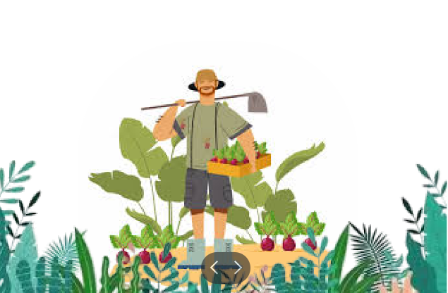
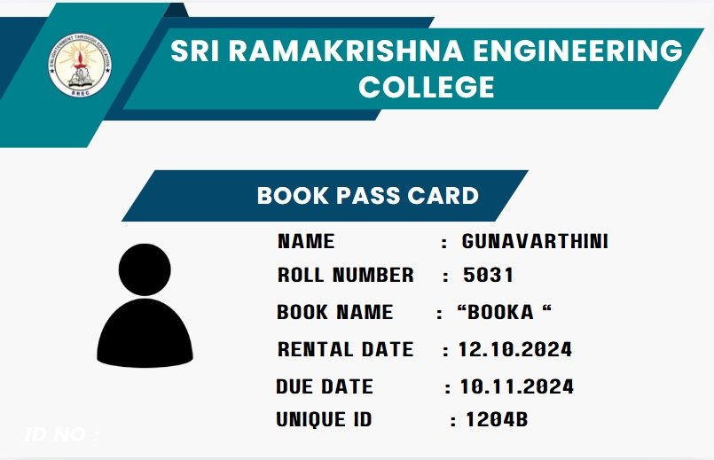

Agro Doctor - Sustainable Fertilizer Usage Optimizer
This Agro software program is made to give farmers tailored fertilizer advice. It optimizes both the kind and amount of fertilizers, encouraging greater agricultural yields and environmental stewardship by utilizing weather forecasts, farmer feedback, and region-specific data.

UiPath - Automated Library Book Pass Generation
"AI-Powered Book Pass ID Generation" automates the book lending process using artificial intelligence. It gathers necessary user information to create unique IDs, aiming to improve operational effectiveness and user experience in academic libraries.
